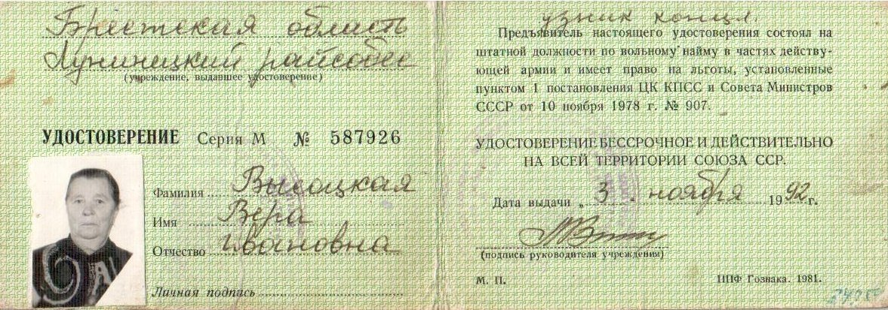

Высоцкая Вера Ивановна
🏡 1. Семья и довоенное детство
Родилась и выросла в крестьянской семье в деревне Западная Морочь на Солигорщине. С малых лет приучена к крестьянскому труду.
⚡ 2. Начало войны и оккупация родного края
В 1941 г. родные места оказались в зоне жестокой оккупации. Окрестные леса кишели карательными отрядами, боровшимися с партизанами.
⛓️ 3. Облава, арест и отправка в эшелонах
В 1942 г. в 14-летнем возрасте во время облавы схвачена фашистами и угнана в эшелоне на принудительные работы в Германию.
🌾 4. Рабский труд, испытания и лагеря Германии
Попала к немецкому фермеру Рихарду в деревню Шильновайда (округ Люкенвальд, район Интербок). Будучи подростком, выполняла непосильную норму: обслуживала коровник, вручную надаивала ежедневно по четыре бака молока, выполняла тяжелые полевые работы.
🕊️ 5. Освобождение союзными и советскими войсками
Освобождена весной 1945 г. частями Советской Армии, вернулась на разрушенную войной белорусскую землю.
🌱 6. Возвращение на пепелище и мирный труд
Проживала в Лунинецком районе, добросовестно трудилась на восстановлении народного хозяйства. 3 ноября 1992 г. Лунинецким райсобесом ей было выдано бессрочное государственное удостоверение бывшего узника фашистских лагерей.
📷 Фотографии и архивные документы (1)
Фото 9. Удостоверение №587926, узнику концлагеря Высоцкой Вере Ивановне